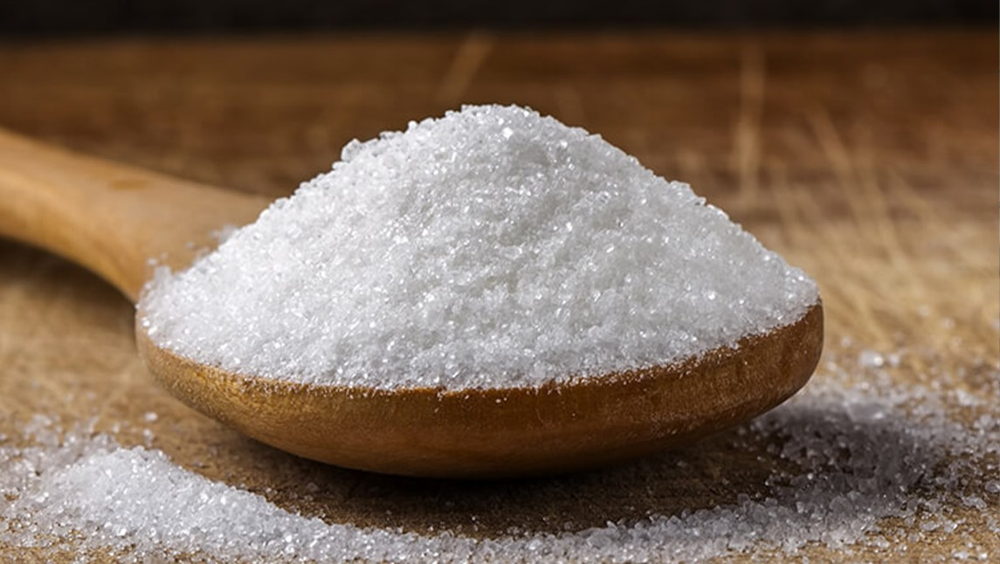

Los azúcares, en la jerga bioquímica, son un cierto tipo de carbohidrato. Pueden ser naturales (frutas, verduras, leche) o artificiales, extraídos y refinados (azúcar de mesa, jarabe de fructosa). Cuando comés los azúcares naturales, tu cuerpo tiene que hacer la extracción y el refinamiento. Hay que ‘trabajar’ por el azúcar, que en cierto modo contrarresta el exceso de energía que aportan. Pero si la extracción ya se hace en una fábrica, obtenés la recompensa sin el esfuerzo, y eso lleva a tu metabolismo a un desequilibrio enfermizo. Esto tiene consecuencias negativas para tu cuerpo. Se vuelve perezoso, lento y ácido. Esto es como aire al fuego de la inflamación, que comienza mostrándose como resistencia a la insulina, endurecimiento de las arterias, seguido de un efecto de bola de nieve que termina en una avalancha.
También es cierto que los azúcares son importantes para la vida y reparación celular. Los azúcares naturales se pueden extraer de carbohidratos más complejos, lo que no solo requiere que tu cuerpo trabaje para obtenerlos, sino que la naturaleza los proporciona en alimentos increíblemente sabrosos, acompañados de otros nutrientes vegetales, antioxidantes, minerales y vitaminas. Y no me refiero solo a las de sabor dulce, sino a todas las frutas y verduras.
Así que, idealmente, no deberías consumir azúcares refinados de ningún tipo. Cualquier cantidad de azúcar refinada es negativa para tu metabolismo; cuanto más, más desagradable. De los azúcares buenos, los que nos da la naturaleza (no solo en frutas y verduras, están presentes en algún grado en todos los alimentos) no creo que haya una cantidad que debas comer o una cantidad máxima para todos. Depende de lo que tu cuerpo esté haciendo en ese momento. Si estás corriendo una maratón o haciendo un gran esfuerzo físico, es posible que necesites más carbohidratos que si simplemente está descansando en la playa. Si estás embarazada, o si estás luchando contra la gripe, tus requisitos de azúcares pueden ser diez veces mayores en comparación con otras épocas.